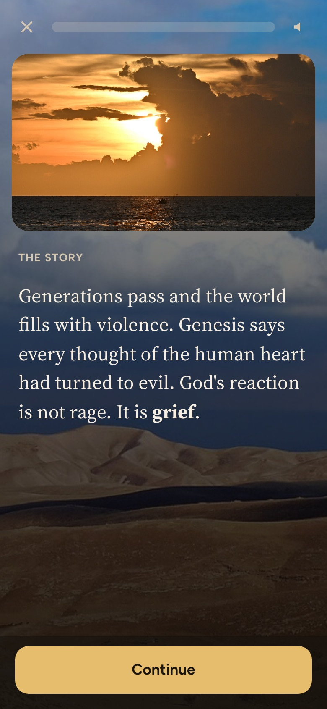
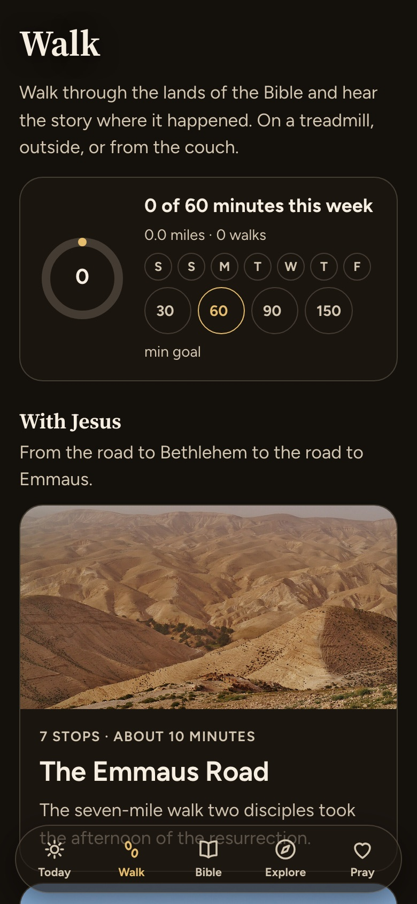
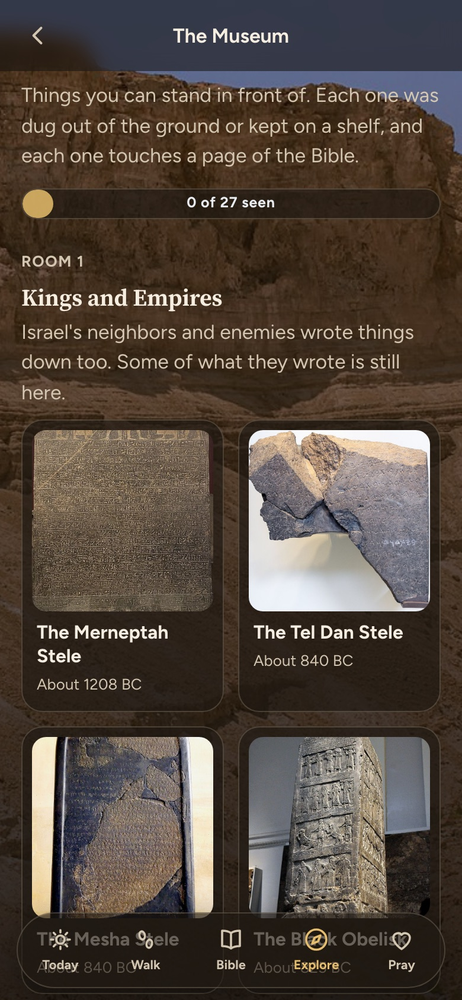
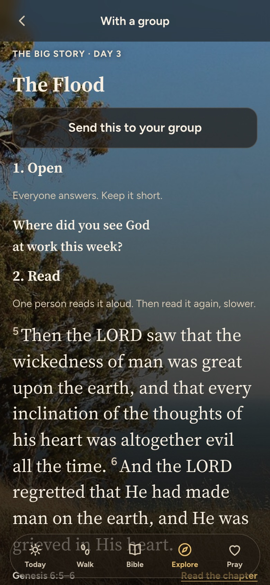

Why this exists
Most people who believe the Bible were never shown how it fits together.
Tabor walks you through it in order, in plain words, a few minutes at a time. 210 lessons across seven 30-day paths.

One lesson a day
The story, the thing most people miss, and the honest hard question.
Then three quick questions so it sticks. About five minutes. Read it, or have it read to you.

Walk the Bible
Move along the real roads, and hear the story at every stop.
On a treadmill, outside, or from the couch. Fifteen walks, from Abraham's journey to the seven miles to Emmaus.

The Museum
Real things dug out of the ground.
Pilate's name in stone. A fishing boat from the time of Jesus. Each piece is marked Established or Debated, so you always know how sure anyone is.

With a group
Any lesson becomes a thirty-minute conversation.
An opening question, the reading, questions for the room and a way to pray together. For a family dinner, two friends or a small group.
Also inside
Everything in one place.
- The whole BibleBerean Standard Bible, with search, notes and highlights.
- The TimelineCreation to Revelation, with what the rest of the world was doing.
- Myth or Bible?Fifty lines everyone quotes. Which are actually in there?
- Hard questionsAnswered plainly, with the main views where Christians disagree.
- PrayA guided prayer, a private journal, and a fasting timer.
- Tell someoneYour story in three minutes and the good news in one.
- MemorizeVerses that stay with you, a few words at a time.
- Sunday notesThe passage, what you heard, and one thing to do this week.
What you won't find
Built the way we'd want it built for us.
- No ads. Ever.
- Nothing is being sold to you while you read.
- No account.
- Your notes and prayers stay on your phone.
- No guilt.
- No streaks to lose and no mascot nagging you.
- No pretending.
- Nothing is presented as proven when it isn't.
Put it on your phone
It takes about twenty seconds.
- Open Tabor in Safari on your iPhone (Chrome on Android).
- Tap Share, then Add to Home Screen.
- Open it from your Home Screen like any other app.